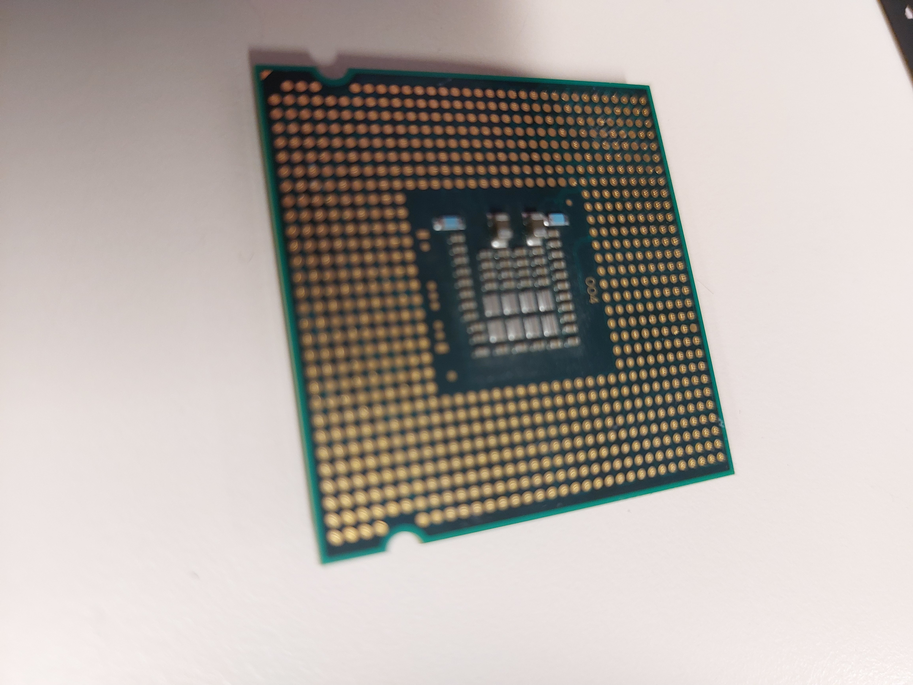
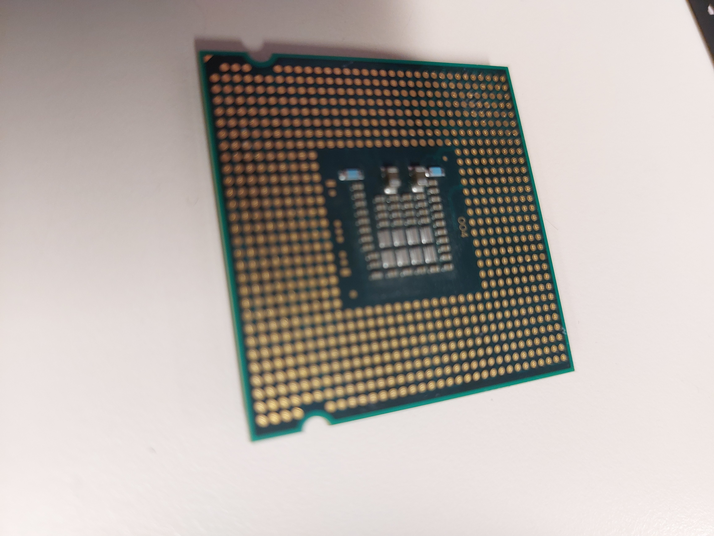

Progetto Monta e smonta


 



Descrizione
In questo progetto, della durata di 3 ore, è stata fornita un'introduzione teorica sui componenti hardware fondamentali di un computer, con una spiegazione del loro funzionamento, delle loro caratteristiche e di come scegliere i più adatti tra i prodotti disponibili sul mercato.
Successivamente, è stato fornito un computer a torre da smontare completamente, vite per vite. Durante lo smontaggio, era consigliato scattare foto per documentare la posizione dei componenti e dei cavi all'interno del case, in modo da rendere più semplice il riassemblaggio. L'obiettivo finale era reinserire tutti i componenti esattamente nella loro posizione originale.
Teoria
Per prima cosa, ho scoperto quali sono le diverse tipologie di case di un computer fisso e in base a cosa va scelto un modello piuttosto che un altro. Successivamente, in base a delle misure di case trovate online, ho individuato la tipologia del case che avevo davanti. Per il case, così come per tutti gli altri componenti, ho cercato un prezzo indicativo online per poter infine stimare il prezzo medio della componente hardware di un computer.
Dopo aver tolto le prime viti che fissano i componenti principali, ho estratto l'alimentatore. L'ho smontato per scoprire tutte le parti da cui era composto, il loro scopo e il funzionamento di ognuna. Assieme all'alimentatore, mi hanno parlato del modding, dei suoi rischi e di come scegliere i componenti di un computer che viene modificato.
Successivamente, ho rimosso gli altri elementi, come schede aggiuntive, la memoria di massa e il vano disco. Infine, ho rimosso l'ultimo componente sul fondo del case, la scheda madre. Ho imparato a cosa serve, come è fatta, quali sono le sue componenti, quali sono le schede aggiuntive e le porte esterne. Ho rimosso e analizzato anche le componenti estraibili della scheda madre: la memoria RAM, il dissipatore e il processore. Per ogni componente, ho osservato le differenze tra i vari modelli presenti sul mercato.
Commento
Ho trovato quest'attività molto bella, anche se mi è dispiaciuto che fosse durata solo 3 ore. A casa, tempo prima, avevo rimosso qualche componente dal mio computer solo per rimuovere la polvere accumulata, ma non avevo mai smontato ogni singola vite da un computer, e questa esperienza mi ha davvero colpito.
Quel giorno, appena tornato a casa, ho preso un vecchio PC che avevo e l'ho smontato completamente per poi rimontarlo, semplicemente perché volevo rivivere l’esperienza fatta quella mattina.